Home
Subscribe to news:
How to run SDL3 app on Android from Windows
I will show how to run the sdl3-sample example on Web with WebAssembly on Windows. You should have Gradle installed. Try to check if Gradle is in the Path. So type in CMD: gradle -v I have Gradle 8.1.1
1. Download and install Android SDK, NDK, JDK
- I advice to install the Qt framework. It is simple to install Android tools from Qt Creator settings. Download Qt Open Source installer here: https://www.qt.io/download-open-source. Scroll down and press on the 'Qt Online Installer' button:
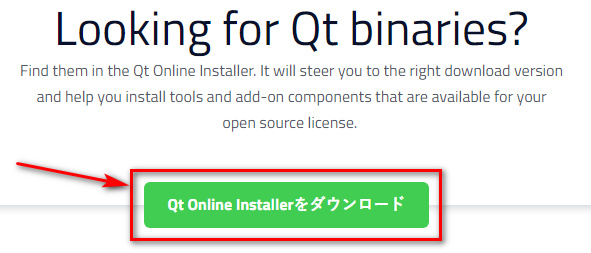
- Press the 'Qt Online Installer for Windows':
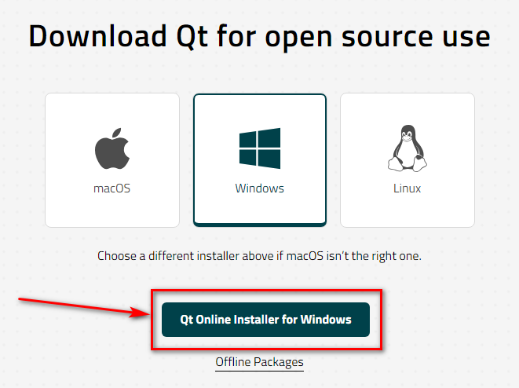
- In Qt Installer you should select the 'Custom Installation':
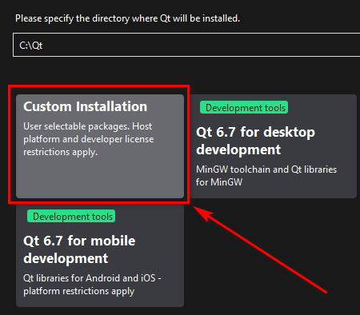
- I prefer to use Qt 6.6.3 instead of Qt 6.7.0 because Qt 6.6.3 used one NDK 25 (1.31 GB). But Qt 6.7.0 uses two NDK's - v25 (1.31 GB) plus v26 (1.9 GB). At first unckeck 'Qt Design Studio' (it requires 2 GB and I think you don't need it for a while):
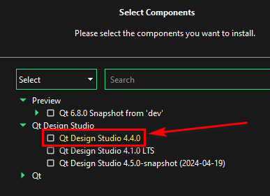
- Set the following checkboxes:
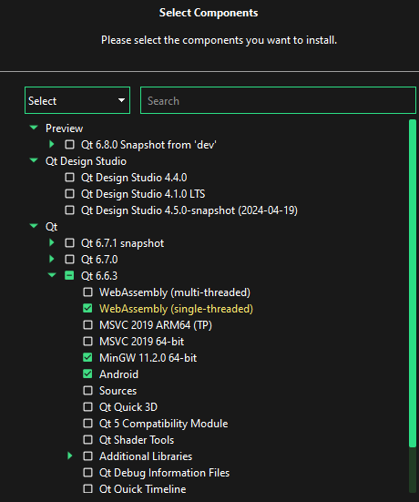
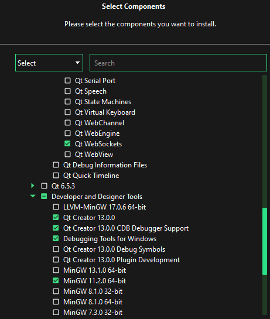
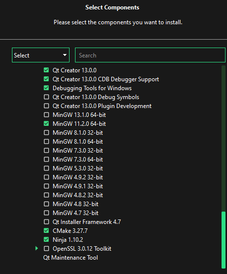
- Do not forget to check 'Android'. Press 'Next' and so on. It requires 3.88 GB
- Run 'Qt Creator'. Go to the settings: 'Edit' > 'Preferences...' > 'Device' > 'Android'
- Press the following buttons to downloa Android SDK and JDK:
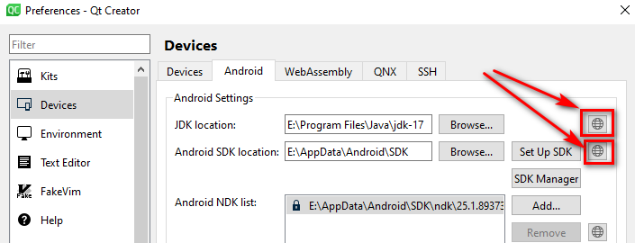
- Press the 'SDK Manager' button:
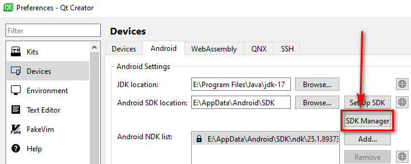
- Select the following Android packages and tools and press 'Apply':
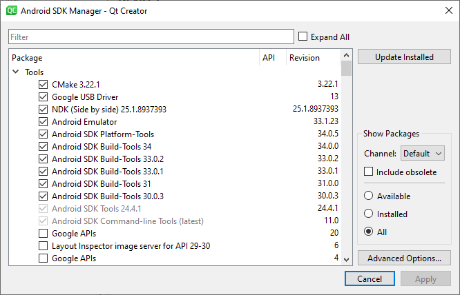
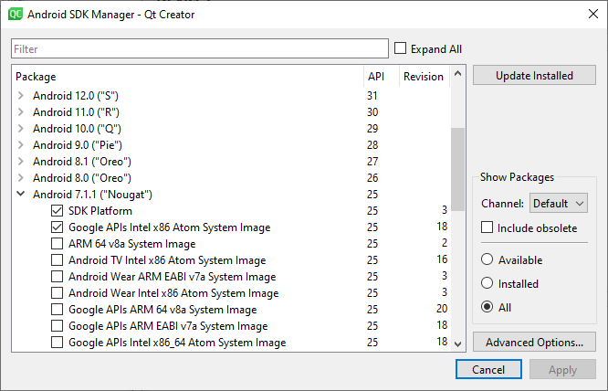
- Press the following button to download OpenSSL:
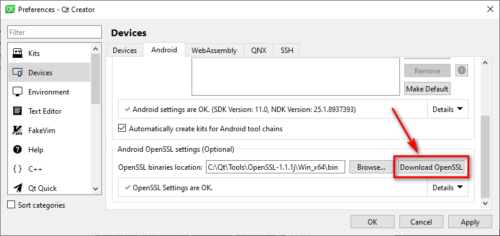
- Press the 'Apply' button:
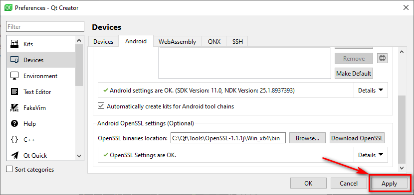
- You can close the Qt Creator
2. Download and run SDL3 example
- Run CMD in a project folder where you want to download the example
- Copy and execute the following command to download the example: git clone https://github.com/Ravbug/sdl3-sample --depth=1 --recurse-submodules
- The source code of the example is here: 'sdl3-sample\src\main.cpp' It just shows a background color
- Copy the 'build.gradle' that is located in the root of the 'sdl3-sample' folder:
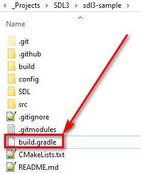
- Open the 'sdl3-sample\SDL\android-project\app' folder and delete 'build.gradle' here:
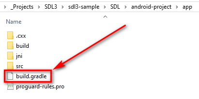
- Paste here the 'build.gradle' that you have copied before (from the root of the 'sdl3-sample' folder)
- Go to the 'sdl3-sample\SDL\android-project' folder and run CMD here. Execute the following command: gradlew assembleDebug It will create APK-file here: 'sdl3-sample\SDL\android-project\app\build\outputs\apk\debug':
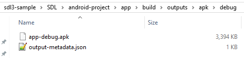
3. Activate a developer mode on your device to debug by USB-cable
- You can execute the following command gradlew installDebug to run your application on your device connected with USB-cable. But you should to activate developer mode and USB degugging on your device at first. I can show how it looks on my old phone Redmi 4X with Android 7
- Go to 'Settings' > 'About Phone' and touch 7 times on 'MIUI version':
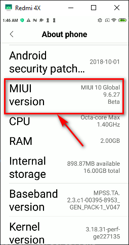
- Go to 'Settings' > 'Aditional setting' > 'Developer options' and activate 'USB debugging' and 'Install via USB':
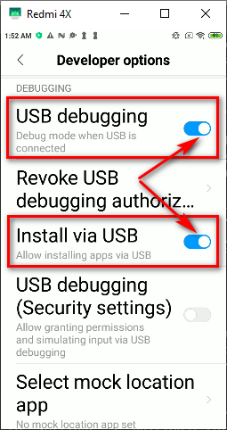
- Now you can run your application on your device by executing the gradlew installDebug inside of the 'sdl3-sample\SDL\android-project' folder
Subscribe to news:
Support me: https://8observer8.github.io/donate.html